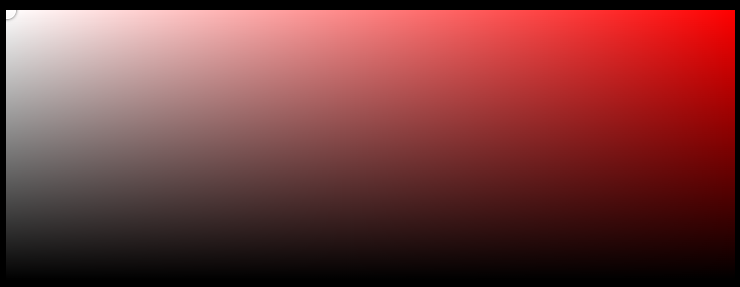

In CSS there are few different ways to
represent colors:
1. Named Color
2. RGB Color
3. HSL Color
4. Hexadecimal Color
5. HWB Color
The following tools will help you become a color
expert. You can pick any individual color in different code
formats, generate color palettes, create gradients, and even
extract colors from images or logos.
Color Resrouces
1.
Paletton
2.
Color Adobe
3. ColorHunt
4.
Coolors
5.
fffuel
6.
CSS Gradient
7.
MyColor Space
8.
Color Gradient Dev
Color Palettes & Generators🎨
1.
Color Gradient Dev
2.
My Color Space
CSS Gradient Tools🌈
1.
UI Gradient
2.
Gradient Hunter
3.
CSS Gradient
🖌 Color Pickers & Converters
1. Paletton
2.
M2 Material
3.
COLOR Hexa
4.
HTML Color Codes
📷 Extract Colors from Images
1.
Lokesh Dhakar
2.
Canva
3.
Image Color Picker
🔥 Unique & Fun Tools
1.
Flat UI Colors
2.
Tailwind CSS
3.
Color Sand Fonts
4.
Brand Colors
5. Color Mind
Color Picker Window

as we move that small point over the color picker window the
angles have different names like:
🎨 Color Terms (in VS Code / Color Pickers)
- Hue: The pure base color on the color wheel
(like red, blue, green).
Example: Red is a hue.
- Shade: A hue + black (darker version of the
color).
Example: Dark red is a shade of red.
- Tint: A hue + white (lighter version of the
color).
Example: Pink is a tint of red.
- Tone: A hue + gray (softer, muted version of
the color).
Example: Dusty rose is a toned version of red.
Quick Shortcut to Remember:
Hue = Base color
Shade = Base Color + Black
Tint = Base Color + White
Tone = Base Color + Gray
🌈 Most Common CSS Named Colors
we can use these color with any element which takes color:
p{
color: red;
}
- Red
- Green
- Blue
- Black
- White
- Gray
- Silver
- Yellow
- Orange
- Pink
- Purple
- Brown
- Cyan
- Magenta
- Lime
- Gold
- Navy
- Teal
- Olive
- Maroon
These are the most common CSS color names easy to
remember, widely used, and supported in every browser.
RGB Colors
p{
color: rgb(255, 0, 0);
}
RGB stands for Red, Green, and Blue.
Each of these colors takes a value between 0 and 255:
- 0 means no color (black).
- 255 means full color (brightest).
By mixing different values of red, green, and blue, we can create
about 16.7 million colors. 🎨
- To use RGB in CSS, we have a function called
rgb().
- The first value is for red
- The second value is for green
The third value is for blue
(Values are written with commas.)
Examples:
- rgb(255, 0, 0) = Pure Red
- rgb(0, 255, 0) = Pure Green
- rgb(0, 0, 255) = Pure Blue
Quick Tip: Think of RGB like
mixing light turn all three to 0 and you get black,
set all three to 255 and you get white.
RGBA Colors
rgba() is just like rgb(), but it has one extra value
called Alpha.
- R = Red (0–255)
- G = Green (0–255)
- B = Blue (0–255)
- A = Alpha (0–1) controls transparency
Alpha value details:
- 1 Fully visible (no transparency)
- 0 Fully transparent (invisible)
- 0.5 50% transparent (see-through effect)
Examples:
- rgba(255, 0, 0, 1) Solid Red
- rgba(255, 0, 0, 0.5) Half-transparent
Red
- rgba(0, 0, 255, 0.3) Light transparent
Blue
- rgba(0, 255, 0, 0) Fully transparent
Green (invisible)
Quick Tip: Use rgba() when you want a color
that blends with the background, like in overlays, shadows, or
buttons with transparency effects.
HEX Colors
🔢 Number Systems in CSS Colors
1. Binary (Base-2)
- Uses only 0 and 1.
- Computers understand everything in binary
(on/off, true/false).
2. Decimal (Base-10)
- Our everyday number system.
- Uses digits 0–9.
- Example: 255 (the maximum
value for RGB colors).
3. Hexadecimal (Base-16)
- Uses digits 0–9 and letters A–F (where
A=10, B=11 … F=15).
- Very common in web development for
representing colors because it’s shorter than writing long decimal
values.
🎨 Hex Color System in CSS
In CSS, hex colors start with # and usually have 6
characters (3 pairs): #RRGGBB
- AA = Alpha (00 = fully transparent, FF =
fully visible)
Examples:
#FF000080 👉🏻 Red with 50% transparency
#0000FF33 👉🏻 Blue with ~20% transparency
Quick Tip:
- HEX is just another way to write colors
(shorter than RGB).
- Always remember: it’s RR GG BB Alpha
(optional).
🎨HSL Colors
HSL stands for Hue, Saturation, Lightness.
- hsl(hue, saturation, lightness)
Position of values:
1. Hue: The base color on the color wheel (0–360°).
- 0 = Red, 120 = Green, 240 = Blue.
2. Saturation: Intensity of the color (0% = gray, 100% = full
color).
3. Lightness: Brightness of the color (0% = black, 50% = normal,
100% = white).
Example:
hsl(0, 100%, 50%) Pure Red
hsl(120, 100%, 50%) Pure Green
hsl(240, 100%, 50%) Pure Blue
🎨 HSLA Colors
HSLA is just like HSL but with an extra Alpha value for
transparency.
-
hsla(hue, saturation, lightness, alpha)
Position of values:
1. Hue (0–360°)
2. Saturation (0%–100%)
3. Lightness (0%–100%)
4. Alpha (0–1 transparency)
Example:
hsla(0, 100%, 50%, 0.5) Half-transparent Red
🎨 HWB Colors (Newer CSS Color System)
HWB stands for Hue, Whiteness, Blackness.
-
hwb(hue whiteness% blackness% / alpha?)
Position of values:
1. Hue: Base color (0–360° on color wheel).
2. Whiteness: How much white is mixed in (0% = no white, 100% =
full white).
3. Blackness: How much black is mixed in (0% = no black, 100% =
full black).
4. Alpha (optional): Transparency (0–1).
Example:
hwb(0 0% 0%) Pure Red
hwb(0 0% 0% / 0.5) Half-transparent
Red
hwb(200 30% 20%) Blue with some white
and black
Color Palette in VS Code & Browser DevTools
In VS Code, when you hover over a color in your CSS
code, a color palette window will appear.
- You can see the base color, alpha
(transparency), and a full color collection.
- At the top, you’ll see the
current color code or color name. You can
click on it to switch between HEX, RGB, HSL, etc.
The same kind of color palette is
also available in the browser (DevTools).
- Just right-click on your page
Inspect.
- If a color is already applied, you’ll see a
small color preview box.
- Click on that color, and the color palette
window will open, allowing you to adjust or change the color just
like in VS Code.
Tip: Both
VS Code and browser DevTools have built-in color
pickers. Use them to quickly test and adjust colors without
memorizing codes.
Most developers preper the hex color system to use in frontend
development because it is short and easy to remember.